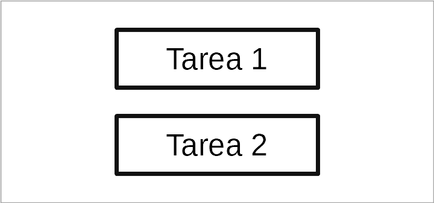
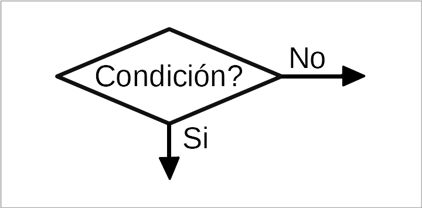

como son los diagramas de flujo,mantenimiento de redes y computo , arduino, karel.
Yo te dare una guia de estos temas que veras a futuro para que puedas relacionarte mas y asi puedas manejar de forma mas eficiente sin que te retraces con estos mismos y puedas relacionarlo con distintos temas.
| Diagramas de flujos |
| manteniminetos de redes de computo |
| Karel |
| Arduino |
Diagramas de flujo
Un diagrama de flujo es un dibujo que representa un proceso detallando sus tareas y decisiones. Su finalidad es expresar de manera simple y visual lo que ocurre en un proceso o en un programa, de manera que sea fácil de comprender.
Los diagramas de flujo se pueden presentar al programador para que éste comprenda mejor lo que el cliente quiere realizar. Posteriormente el programador desarrolla el programa basándose en los diagramas de flujo.
También se dibujan diagramas de flujo para documentar un programa de ordenador una vez terminado, para comunicar lo que hace el programa de una manera visual y comprensible.
Los diagramas de flujo no se limitan a representar el funcionamiento de los programas, también pueden informarnos de las tareas que debemos realizar en una situación determinada.
A continuacion te presentare ejemplo de diagramas de flujo te explicare para que sirve cada una de las opciones y posteriormente
te dejare una actividad para que puedas hacer interactuar y hacer tu propio diagrama de flujo
Como puedes observar en las siguientes imagenes son probelmas sencillos los cuales plantean un problema de la vidia
diaria y cada uno de ellos
tienen condiciones las cuales sirven para que se pueda solucionar un ejemplo si estudio y resuelvo problemas no he
aprendido aun la condicion es que en caso de que
no tengo que repetir el proceso hasta logralo y llegar al fin. Cuando tu sigues alguna receta en youtube o de una revista esta misma se podria conciderar un diagrama de flijo ya que tu estas siguendo una serie de pasos para poder hacer tu comida al igual que hay condiciones ejemplo: en caso de no contar con aceite puede vertir manteca de cerdo para hacerlo. Esto es una condicion que hace que todo tu proceso no acabe hasta ahi al contrario le das solucion al problema.
Ahora que ya estas un poco mas relacionado con los diagramas de flujo te mostrare en que consiste cada una de sus caracteristicas.
Comienzo y final
Todos los diagramas de flujo deben tener un símbolo de comienzo y un símbolo de finalización, que se representan con
rectángulos redondeados en los extremos.
Tareas
Las tareas que realiza el programa se representan con rectángulos. Dentro del rectángulo se debe escribir en qué consiste la tarea. Por ejemplo sumar dos números o enviar un mensaje.

Entrada y salida de datos.
Cuando la tarea consiste en una entrada o salida de datos tal como escribir en la pantalla, pedir que el usuario escriba un texto, imprimir una hoja de papel, etc. En ese caso la tarea tendrá una forma de rectángulo inclinado.
Decisiones
Un símbolo muy especial es el símbolo de decisión. Con este símbolo el programa puede seguir dos caminos distintos, dependiendo de que la condición se cumpla o que no se cumpla.

Flechas de flujo
Todos los símbolos deben ir enlazados entre sí por flechas que indican cómo se realiza la secuencia. Las flechas indican el camino o flujo que sigue el ordenador desde el comienzo hasta la finalización del programa, a través de todas las tareas.
el cual su funcion es poder hacer diagramas de flujo complejos.
descarga aqui:RAPTOR - Flowchart Interpreter - Descargar
Una vez instalado realiza las siguientes actividades:
2.-Crear un diagrama de flujo que pida un número al usuario y determine si es par o impar.
3.-Crear un diagrama de flujo que permita al usuario ingresar varios números y contar cuántos son positivos y cuántos son negativos.
1. Limpieza Física de la Computadora: Importancia de un Ambiente Libre de Polvo
¿Por qué es importante?
La acumulación de polvo en los componentes internos de una computadora,
especialmente en el ventilador y el sistema de refrigeración, puede
reducir el rendimiento del hardware. El sobrecalentamiento puede
ocurrir debido a la obstrucción de las rejillas de ventilación, lo que
reduce la vida útil del dispositivo.
Pasos para una limpieza efectiva:
- Apagar y desconectar la PC: Siempre asegúrate de apagar la computadora y desconectarla antes de comenzar cualquier proceso de limpieza.
- Limpiar el exterior: Usa un paño de microfibra para limpiar el polvo del monitor, teclado, y carcasa.
- Limpiar el interior: Con la ayuda de aire comprimido, elimina el polvo de los ventiladores, las tarjetas gráficas y las ranuras de expansión. Evita tocar los componentes internos con las manos, ya que la electricidad estática puede dañarlos.


2. Mantenimiento de Software: El Uso de Antivírus y Actualizaciones de Seguridad
Antivirus: Protección contra Amenazas Externas
Un antivirus es una de las primeras líneas de defensa contra malware,
virus, ransomware y otras amenazas cibernéticas. Asegurarse de tener un
software antivirus confiable y actualizado es fundamental para la
protección de datos y el funcionamiento correcto del sistema.
Pasos recomendados:
Instalar un antivirus confiable: Asegúrate de elegir un software de seguridad de buena reputación (como Norton, Kaspersky, Bitdefender, etc.).
Realizar análisis periódicos: Configura el antivirus para realizar análisis automáticos en intervalos regulares.
Actualizar las bases de datos de virus: Los antivirus dependen de bases de datos actualizadas para detectar amenazas nuevas. Asegúrate de que tu software de seguridad siempre esté actualizado

Gestión de Archivos y Espacio en Disco: Evitar la Saturación del Sistema
El mantenimiento de las unidades de almacenamiento es vital para asegurar que la computadora siga funcionando de manera eficiente. Si el disco duro está lleno o tiene archivos innecesarios, el sistema puede volverse lento.
Pasos recomendados:
Eliminar archivos temporales:
Los archivos temporales y cachés pueden ocupar una gran cantidad de
espacio. Usa herramientas como "Liberador de espacio en disco" en
Windows para eliminarlos.
Desfragmentar y optimizar el disco duro: En sistemas con discos duros mecánicos (HDD), la desfragmentación ayuda a reorganizar los archivos para un acceso más rápido.
Utilizar almacenamiento en la nube: Para liberar espacio en el disco duro local, puedes almacenar archivos grandes en servicios de almacenamiento en la nube como Google Drive o Dropbox.

Karel
¿Qué es Karel y cómo funciona?
Karel es un robot programable utilizado para enseñar los conceptos básicos de la programación de manera sencilla y visual. Fue diseñado para moverse en un mundo cuadriculado, siguiendo instrucciones simples.
Características principales de Karel
Ambiente cuadriculado: Karel se mueve dentro de un mundo que está dividido en celdas o cuadriculas.
Instrucciones simples: Puede moverse, girar a la izquierda, recoger y dejar objetos.
Estructuras de control: Se pueden usar condicionales y ciclos para optimizar su comportamiento.
Comandos básicos de Karel
avanza();- Mueve a Karel una casilla adelante.giraIzquierda();- Gira a Karel 90 grados a la izquierda.cogeZumbador();- Recoge un objeto llamado "zumbador".dejaZumbador();- Deja un "zumbador" en la celda actual.frenteLibre();- Verifica si Karel puede avanzar.
Ejemplo de código en Karel
Este es un ejemplo sencillo donde Karel avanza tres casillas y deja un zumbador:
function main() {
avanza();
avanza();
avanza();
dejaZumbador();}Aplicaciones de Karel
Ideal para aprender programación sin conocimientos previos.
Permite desarrollar habilidades lógicas y algorítmicas.
Base para aprender lenguajes como Python o Java.
Con estos conceptos, puedes comenzar a programar en Karel y mejorar tus habilidades de programación de manera divertida y sencilla.


.
Arduino
¿Qué es Arduino y cómo funciona?
Arduino es una plataforma de hardware y software de código abierto diseñada para facilitar el desarrollo de proyectos electrónicos y de programación. Su facilidad de uso la hace ideal tanto para principiantes como para expertos en el campo de la electrónica y la automatización. Arduino permite la creación de dispositivos inteligentes, interactivos y automatizados mediante el uso de sensores, actuadores y otros componentes.
Características principales de Arduino
Placa de hardware: Las placas Arduino incluyen un microcontrolador que es el "cerebro" del sistema, permitiendo la ejecución de instrucciones programadas.
Lenguaje de programación: Arduino utiliza un lenguaje basado en C/C++, simplificado para facilitar su aprendizaje y uso.
Entorno de desarrollo (IDE): El software Arduino IDE permite escribir, compilar y cargar programas en la placa de manera sencilla.
Compatibilidad con sensores y actuadores: Arduino puede interactuar con diversos dispositivos como LEDs, motores, sensores de temperatura, pantallas LCD, entre otros.
Comunidad activa: Existen miles de proyectos, tutoriales y foros donde se pueden encontrar soluciones y compartir conocimientos.
Tipos de placas Arduino
Existen diferentes modelos de placas Arduino, cada una diseñada para diferentes aplicaciones:
Arduino uno: Modelo más popular, ideal para principiantes y proyectos generales.
Arduino Mega: Cuenta con más pines de entrada/salida, adecuado para proyectos complejos.
Arduino Nano: Versión compacta, ideal para proyectos pequeños y portátiles.
Arduino Leonardo: Permite la emulación de dispositivos USB como teclados o ratones.
Arduino ESP32 y ESP8266: Incorporan conectividad WiFi y Bluetooth, ideales para proyectos IoT.
Comandos básicos de Arduino
pinMode(pin, modo);- Configura un pin como entrada (INPUT) o salida (OUTPUT).digitalWrite(pin, estado);- Envía una señal de encendido (HIGH) o apagado (LOW) a un pin.digitalRead(pin);- Lee el estado de un pin digital (alto o bajo).analogWrite(pin, valor);- Envía una señal PWM a un pin para controlar la intensidad de un LED o la velocidad de un motor.analogRead(pin);- Lee un valor analógico de un sensor, como un potenciómetro o un sensor de temperatura.delay(ms);- Pausa la ejecución del programa durante el tiempo especificado en milisegundos.
Ejemplo de código en Arduino
Este es un ejemplo básico donde se hace parpadear un LED conectado al pin 13 de la placa Arduino:
void setup() {
pinMode(13, OUTPUT); // Configura el pin 13 como salida
}
void loop() {
digitalWrite(13, HIGH); // Enciende el LED
delay(1000); // Espera 1 segundo
digitalWrite(13, LOW); // Apaga el LED
delay(1000); // Espera 1 segundo
}
Sensores y actuadores compatibles con Arduino
Arduino puede interactuar con una gran variedad de sensores y actuadores, incluyendo:
Sensores: Temperatura (DHT11, LM35), humedad, luz (LDR), distancia (ultrasónicos HC-SR04), movimiento (PIR).
Actuadores: Motores (servo, paso a paso, DC), relevadores, pantallas LCD y LED matrices.
Comunicación: Módulos WiFi (ESP8266, ESP32), Bluetooth, RFID, GPS.
Aplicaciones de Arduino
Automatización del hogar: Control de luces, persianas, seguridad.
Robótica: Creación de robots autónomos o controlados remotamente.
Internet de las cosas (IoT): Monitoreo y control de dispositivos vía internet.
Educación y aprendizaje: Enseñanza de programación y electrónica.
Prototipado rápido: Desarrollo de dispositivos para pruebas e innovación.
Con estos conceptos, puedes comenzar a programar en Arduino y desarrollar proyectos electrónicos innovadores de manera sencilla y creativa. Gracias a su versatilidad y facilidad de uso, Arduino es una excelente opción para cualquier persona interesada en la programación y la electrónica.
arduino link de descarga:Software | Arduino